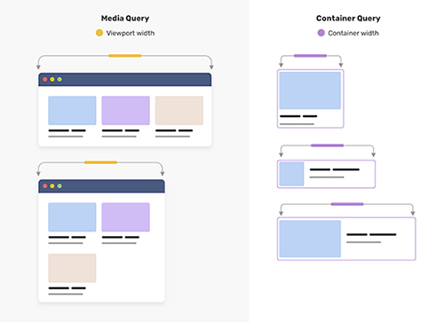

Samuel Gomez
Lead Front-end

Lead Front-end
Le State of CSS est un sondage annuel qui permet de connaître les fonctionnalités CSS les plus utilisées, les plus appréciées et les plus attendues.
En 2021, les fonctionnalités les plus utilisées sont : Flexbox, Grid, Responsive design, CSS Variables, BEM,
Les fonctionnalités les plus appréciées sont : Grid, Flexbox, Responsive design, CSS Variables, BEM,
Les fonctionnalités les plus attendues sont : Container Queries, Nesting, Custom Properties, Aspect Ratio, Logical Properties,
Vous pouvez consulter le sondage sur le site : State of CSS
La W3C est l'organisme de standardisation du web. Elle publie des recommandations pour les technologies du web.
Vous pouvez consulter la liste des propriétés CSS sur le site : W3C - liste des propriétés CSS
Caniuse est un site qui permet de connaître la compatibilité des fonctionnalités CSS ou Javascript avec les navigateurs.
Vous pouvez consulter la compatibilité des fonctionnalités sur le site : Caniuse
La règle @supports permet de tester si un navigateur supporte une fonctionnalité CSS.
Elle est très utile pour appliquer des styles en fonction des fonctionnalités supportées par le navigateur.
@supports (<supports-condition>) {
/* If the condition is true, use the CSS in this block. */
}
@supports not (<supports-condition>) {
/* If the condition is false, use the CSS in this block. */
}
Les variables CSS permettent de stocker des valeurs pour les réutiliser dans un fichier CSS.
Les variables CSS permettent de simplifier le code et de le rendre plus lisible notamment pour un Design System.
Pour déclarer simplement une variable CSS, il suffit d'utiliser le préfixe -- suivi du nom de la variable.
:root{
--main-bg-color: pink;
}
Elles peuvent être déclarées globalement dans le :root{} ou localement dans un sélecteur.
La portée des variables CSS est limitée à l'élément parent.
Pour utiliser une variable CSS, il suffit de l'appeler avec la fonction var() en lui passant le nom de la variable en paramètre.
:root {
--main-bg-color: hsla(0, 100%, 50%, 0.5);
}
.box {
background-color: var(--main-bg-color);
}
Les variables CSS peuvent être utilisées à peu près partout.
Lorsqu'une variable CSS n'est pas définie, elle prend la valeur par défaut.
Il est aussi possible de définir une suite de valeurs pour une variable CSS.
:root {
--main-bg-color: red;
--main-color: blue;
}
.box {
background-color: var(--main-bg-color, blue);
color: var(--main-color, var(--main-bg-color, blue));
}
On peut stocker différents types de données (nombres, couleurs, chaînes de caractères, url, valeurs calculées, etc.)
:root {
--all-padding: 10px 20px 30px 40px;
--boolean: false;
--math: sqrt(pow(var(--all-padding), 2) + pow(var(--all-padding), 2));
--string: "Hello, World!";
--url: url("https://www.example.com");
--color: #ff0000;
--length: 100px;
--number: 42;
--percentage: 50%;
--angle: 45deg;
--time: 2s;
--resolution: 96dpi;
--frequency: 1Hz;
--font: Arial, sans-serif;
--gradient: linear-gradient(45deg, black, #222);
--image: url("image.jpg");
--position: center;
--shape: circle;
--transform: rotate(45deg);
}
mais... le type est "unknown"
Les variables CSS sont faiblement typées, imaginons un système de thème basé sur une seule couleur principale.
:root {
--brand: blue;
--brand-hightlight: color-mix(var(--brand) white 50%);
--brand-shadow: color-mix(var(--brand) black 50%);
--brand-gradient: linear-gradient(45deg, var(--brand-hightlight), var(--brand-shadow));
}
@media (prefers-color-scheme: dark) {
:root {
--brand: lightblou; /* typo üò± */
}
}
si une erreur de type survient, la variable est ignorée, et c'est la valeur initiale ou héritée de la propriété qui est utilisée.
La règle @property permet de déclarer une variable CSS avec un type de données, ce qui permet de gérer les erreurs de type.
On peut également fournir une valeur par défaut et gérer l'héritage.
On déclare une custom property avec @property et son nom (--*)
@property --brand {
syntax: '<color>';
inherits: false;
initial-value: blue;
}
On définit le type de valeur attendue avec la propriété syntax
@property --brand {
syntax: '<color>';
inherits: false;
initial-value: blue;
}
On définit si la custom property hérite de la valeur de son parent avec la propriété inherits
@property --brand {
syntax: '<color>';
inherits: false;
initial-value: blue;
}
On définit la valeur initiale de la custom property avec la propriété initial-value
@property --brand {
syntax: '<color>';
inherits: false;
initial-value: blue;
}
@property --brand {
syntax: '<color>';
inherits: false;
initial-value: blue;
}
:root {
--brand-hightlight: color-mix(var(--brand) white 50%);
--brand-shadow: color-mix(var(--brand) black 50%);
--brand-gradient: linear-gradient(45deg, var(--brand-hightlight), var(--brand-shadow));
}
@media (prefers-color-scheme: dark) {
:root {
--brand: lightblou; /* typo üò± */
}
}
si une erreur de type survient, la variable est ignorée, et c'est la valeur initiale de la variable qui est utilisée.
Voici une démo qui illustre l'erreur de type avec et sans la règle @property pour déclarer une variable CSS.
Les variables CSS sont héritées par les éléments enfants.
Il est possible de redéfinir une variable CSS pour un élément enfant.
Cela permet de personnaliser les éléments enfants sans toucher aux éléments parents.
:root {
--main-bg-color: hsla(0, 100%, 50%, 0.5);
}
.box {
--main-bg-color: hsla(0, 50%, 50%, 0.5);
background-color: var(--main-bg-color);
}
On ne peut pas surcharger une variable CSS affectée à une propriété du parent depuis un élément enfant sans avoir à redéclarer la propriété.
Une des forces des variables CSS est de pouvoir déclarer des variables CSS sur un élément de base en les appliquant à ses propriétés CSS ou à ses enfants.
Et de pouvoir créer des déclinaisons sans devoir tout redéclarer.
.alert {
--state-color: white;
--emoji: "C'est ok üòÄ";
border: var(--state-color) 1px solid;
background-image: linear-gradient(45deg, black, #222);
padding: 1rem 4rem;
border-radius: 20px;
font-size: 2rem;
text-align: center;
box-shadow: 0 0 25px 5px hsla(0deg 0% 0% / 100%);
display: flex;
.message {
font-size: 1rem;
color: var(--state-color);
&::before {
content: var(--emoji);
}
}
.alert--success {
--state-color: green;
--emoji: "Succ√®s üòé";
border: var(--state-color) 1px solid;
.message {
color: var(--state-color);
&::before {
content: var(--emoji);
}
}
Les variables CSS permettent de créer des boucles CSS sans avoir à utiliser de préprocesseur CSS.
Les variables CSS peuvent être modifiées en JavaScript.
Cela permet de personnaliser le style d'un élément en fonction d'une action utilisateur ou d'effectuer des animations.
window.CSS.registerProperty({
name: '--primary-secondary',
syntax: '<color>',
initialValue: 'blue',
inherits: false,
});
// obtenir une variable à partir d'un style en ligne (dans un élément html)
element.style.getPropertyValue("--ma-variable");
// obtenir une variable par ailleurs
getComputedStyle(element).getPropertyValue("--ma-variable");
// définir une variable dans un style en ligne
element.style.setProperty("--ma-variable", varJS + 4);
Le nesting CSS est technique d'imbrication des sélecteurs CSS pour éviter la répétition de code.
Elle était déjà disponible avec les préprocesseurs CSS comme Sass, Less ou Stylus.
Pour imbriquer des sélecteurs CSS, on peut utiliser le sélecteur d'imbrication '&'
.parent {
/* parent styles */
& .child1 {
/* child1 styles */
}
.child2 {
/* child2 styles */
}
&.second-class {
/* second-class styles */
}
}
.parent .child1{
/* child1 styles */
}
.parent .child2 {
/* child2 styles */
}
.parent.second-class {
/* second-class styles */
}
On peut imbriquer des sélecteurs CSS avec des combinateurs :
'+' ou le sélecteur enfant direct '>'ou autre combinateur
.parent {
/* parent styles */
> .directchild {
/* directchild styles */
}
+ .sibling {
/* sibling styles */
}
}
.parent > .directchild {
/* directchild styles */
}
.parent + .sibling {
/* sibling styles */
}
.parent-pseudo {
background: red;
&:hover, &:focus {
background: blue;
}
&:is(p, em, i) {
background: blue;
}
&::after, &::before {
content: "✅️";
}
::after {
content: "❌️";
}
}
.parent-pseudo {
background: red;
}
.parent-pseudo:hover, .parent-pseudo:focus, .parent-pseudo:is(p, em, i) {
background: #00f;
}
.parent-pseudo:after, .parent-pseudo:before {
content: "✅️";
}
.parent-pseudo :after {
content: "❌️";
}
.component {
background: red;
.ancestor & {
background: orange;
}
}
.component {
background: red;
}
.ancestor .component {
background: orange;
}
Le fonctionnement du nesting CSS est similaire à celui de Sass mais la concaténation de nom n'est pas possible.
/* ❌️ */
.block{
background: green;
&__element {
background: blue;
&--modifier{
background: red;
}
}
}
/* ❌️ */
.block {
background: green;
}
__element.block {
background: #00f;
}
--modifier:is(__element.block) {
background: red;
}
Le pseudo-class :has() est une fonction CSS qui permet de sélectionner un élément qui contient un autre élément qui correspond à un sélecteur donné.
selecteur:has(selecteur)
On va donc pouvoir sélectionner un élément parent en fonction de la présence d'un élément enfant.
.card {
/* style de base */
}
.card:has(img) {
/* style de surcharge */
}
Les pseudo-classes CSS permettent de sélectionner des éléments en fonction de leur état. On va pouvoir observer depuis un élément parent les changements d'état d'un élément enfant.
div:has(> ul:empty) {
}
form:has(> :checked){
}
Il est possible de chainer l'utilisation de la pseudo-class :has() afin d'avoir un ciblage plus précis.
Ici, on cible une carte qui possède une image ET un titre. .card:has(img):has(h2) {
/* style */
}
Si on souhaite un ciblage plus souple, on peut fournir une liste de sélecteurs à la fonction :has().
Ici, on cible une carte qui possède soit une image, soit un titre. ou les deux. .card:has(img, h2) {
/* style */
}
Pour finir dans les cas classiques du :has(), on peut utiliser la fonction pour sélectionner un élément parent en fonction de la présence d'un élément lointain enfant.
Dans l'exemple ci-dessous, on cherche à cibler le footer si quelque part dans le DOM ma checkbox est cochée. body:has(input.myCheckBoxTheme:checked) footer {
/* style */
}
h2 + p {
}
h2:has(+ p) {
}
Si on peut déjà faire des choses intéressantes avec le cas basique, on peut aller plus loin en utilisant la pseudo-class :has() pour créer des layouts personnalisés.
.card:has(h2 + img + p + p) {
grid-template-areas:
"img img"
"h2 h2"
"p1 p2"
}
.card:has(h2 + img + img + p + p) {
grid-template-areas:
"h2 h2"
"img1 img2"
"p1 p2"
}
h2 ~ p {
}
h2:has(~ p) {
}
On peut également cibler un intervalle d'éléments adjacents
.from ~ :has(~ .to) {
}
On peut appliquer un style en fonction de la quantité d'éléments ciblés.
Dans l'exemple ci-dessous, on cible les listes qui possèdent au moins 5 éléments. ul:has(> *:nth-child(5n)) {
}
On peut appliquer un style en fonction de la valeur d'un attribut.
On peut tirer partie de la puissance du sélecteur d'attribut et ses "expressions régulières". &:has(a[href$=".wave"]) {
--theme-color: purple;
--theme-icon: "üîà";
--theme-file: " Audio";
}
&:has(a[href$=".jpg"]) {
--theme-color: sienna;
--theme-icon: "üèû";
--theme-file: " Image";
}
&:has(a[href$=".pdf"]) {
--theme-color: darkred;
--theme-icon: "PDF";
--theme-file: " PDF";
}
&:has(a[href$=".docx"]) {
--theme-color: blue;
--theme-icon: "DOCX";
--theme-file: " DOCX";
}
&:has(a[href$=".xslx"]) {
--theme-color: darkgreen;
--theme-icon: "XLSX";
--theme-file: " XLSX";
}
Les containers permettent de définir des styles en fonction de la taille du conteneur parent plutôt que de le faire avec les medias queries et la taille de l'écran.
Source image : ishadeed.com
Il faut d'abord définir le container-type avec la règle
.container {
container-type: inline-size;
}Ensuite, il est possible de définir des règles en fonction de la taille du container avec la règle
.card {
/* style par défaut */
@container (10em <= width <= 20em) {
/* style pour un container de 300px de large */
}
}On peut fournir une liste de noms
.container {
container-name: mobile tablet;
}On peut ensuite préciser le nom du container dans les règles
.card {
/* style par défaut */
@container mobile (320px < width <= 640px) {
}
@container tablet (640px < width <= 768) {
}
}Clamp fait partie des fonctions mathématiques CSS, elle permet de définir une valeur comprise entre deux bornes avec une valeur préférée.
On peut l'utiliser pour rendre une taille de police responsive ou pour définir des bornes pour d'autres propriétés CSS.
La fonction clamp() prend trois paramètres : une valeur minimale, une valeur préférée et une valeur maximale.
La valeur préférée est la valeur qui sera utilisée si elle est comprise entre les deux bornes.
La fonction clamp() est une fonction CSS native qui est supportée par tous les navigateurs modernes.
Un cas d'usage très courant de la fonction clamp() est la définition de tailles de police responsive.
Auparavant, on utilisait les media queries pour définir des tailles de police en fonction de la taille de l'écran.
h1 {
font-size: clamp(1rem, 5vw, 2rem);
}
Pour mieux comprendre le fonctionnement de la fonction clamp(), vous pouvez utiliser le simulateur ci-dessous.
Un autre cas d'usage de la fonction clamp() est la définition de largeurs de conteneurs responsives.
Lorsque l'on conçoit des applications web, il est important de prendre en compte la navigation au clavier, tant pour l'accessibilité que pour l'expérience utilisateur.
il est donc important de définir un parcours logique pour la navigation au clavier. Cela fait partie des points importants à prendre compte lors de la conception UX d'une application web.
Voici la liste des éléments qui sont focusables par défaut :
Voici une liste plus exhaustive d'éléments focusables : allyjs.io
Tout le monde connait la pseudo-class
:focusil est possible de personnaliser le style avec la propriété outline et outline-offset
:focus {
outline: 2px solid blue;
outline-offset: 5px;
}La pseudo-class
:focus-visiblePour plus d'informations, vous pouvez consulter la documentation :focus-visible
Si on souhaite cibler un élément parent qui contient un élément qui a le focus, nous pourrions utiliser le
fieldset:has(input:focus) {
border: 2px solid blue;
}On peut faire la même chose avec la pseudo-class
:focus-withinPour plus d'informations, vous pouvez consulter la documentation :focus-within
L'inconvenient du :focus-within est qu'il ne prend pas en compte la visibilité de l'élément. Pour cela, on peut utiliser le :has()
fieldset:has(:focus-visible) {
border: 2px solid blue;
}De cette manière, l'élément parent ne sera ciblé que si un des éléments enfant est visible.
new modal component
Les popovers sont des éléments qui permettent d'afficher des informations contextuelles. Ils sont souvent utilisés pour afficher des informations supplémentaires.
Cette nouvelle API permet de créer des popovers sans avoir à utiliser Javascript
Les éléments modaux sont des éléments qui bloquent l'interaction avec le reste de la page.
Les éléments non-modaux sont des éléments qui permettent de continuer à interagir avec le reste de la page.
Les popovers sont des éléments non-modaux, si on souhaite créer des éléments modaux, l'élément dialog est plus adapté.
La syntaxe est assez simple. Il suffit d'ajouter quelques attributs sur l'élément actionnable et sur l'élément à afficher.
Success : You win !
Les attributs sont les suivants :
Il est possible de personnaliser le style des popovers en fonction de leur état.
l'état d'ouverture est géré par la pseudo-class
[popover]:popover-open {
background-color: white;
}Comme pour les dialog, on peut personnaliser le fond avec le pseudo-element
[popover]::backdrop {
background-color: rgba(0, 0, 0, 0.5);
}L'API Popover dispose également de quelques méthodes Javascript pour manipuler les popovers.
Text wrap is a CSS property that allows text to wrap around an image or other element.
pretty or balance
La propriété display permet de contrôler la manière dont un élément est affiché sur la page.
Des ajouts récents ont permis de nouvelles valeurs pour cette propriété.
Il arrive parfois que l'on ait besoin d'appliquer un style sur les enfants indirects.
Plutot que "aplatir notre arbre" en utilisant des sélecteurs plus spécifiques, il est possible d'utiliser la valeur display: contents; pour ignorer l'élément parent.
Prenons un exemple avec un élément de type flex.

Ce code ne peut pas fonctionner car input n'est pas un enfant direct de header
header {
display: flex;
}
input {
flex-grow: 1;
}
Si on applique un display: contents; sur le form, celui-ci ne créé plus de boite (il est en quelque sorte ignoré)
Les enfants directs du form vont donc être affichés comme s'ils étaient des enfants directs du header
header {
display: flex;
}
form {
display: contents;
}
input {
flex-grow: 1;
}
Ce n'est pas une nouveauté mais c'est assez peu utilisé, il est possible de définir deux valeurs pour la propriété display.